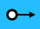

Digitale Uitgang© 2018, ProtoIt Platform: RASPBERRY |  |
Beschrijving:
Digitale Uitgang gebruik je om een actuator digitaal aan te sturen. Digitaal betekent dat er twee waardes zijn: laag (= uit) of hoog (= aan).
´Laag´ heeft een waarde gelijk aan 0 en ´hoog´ een waarde ongelijk aan 0 (meestal 1).
De Raspberry geeft bij ´laag´ een spanning van 0 volt op de pin en bij ´hoog´ een spanning van 3,3 volt.
LET OP! Een uitgang kan niet meer dan 10mA verdragen. Bij een grotere stroom kan het Raspberry-board beschadigen!
Onderdelen:
Digitale Uitgang
Instellingen:
| Pin | De GPIO-pin waarop je de actuator aansluit. |
| Signaal | Wanneer er een signaal wordt ontvangen wordt een actuator ingeschakeld en anders uitgeschakeld. Je kunt hiervoor één van de Constante signalen gebruiken. |
| Wanneer hoog? | Wanneer er een signaal wordt ontvangen wordt een actuator ingeschakeld. |
| Wanneer laag? | Wanneer er een signaal wordt ontvangen wordt een actuator uitgeschakeld. |
| Start wanneer? | Als het ingevulde signaal optreedt, zal de actuator reageren.Standaard op het signaal Direct ingesteld. |
| Stop wanneer? | Als het ingevulde signaal optreedt, wordt de actuator uitgeschakeld en zal verder niet meer reageren.Standaard op het signaal Nooit ingesteld. |